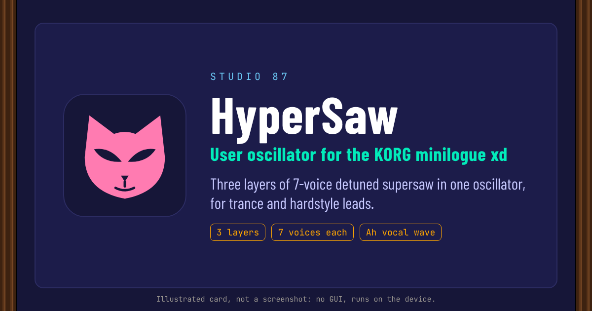

HyperSaw
minilogue xd user oscillator · version 1.3 · Studio 87
Three layers of JP-8000 style supersaw in one oscillator. Each layer has 7 detuned voices and its own waveform, for trance and hardstyle leads.

- Version 1.3. The unit in dist/ was built from this repo's source and its manifest matches manifest.json.
- No test on a real minilogue xd is recorded in this repo yet. Treat it as a test build and tell us what you hear.
- Linux install steps are not tested yet.
- Pre-release on GitHub.
Install
- Download the zip from Releases (or the unit file in
dist/). Do not rename or open thehypersaw.mnlgxdunitfile. - Open the KORG minilogue xd Sound Librarian and connect the synth by USB.
- Drag
hypersaw.mnlgxdunitinto a free User Oscillator slot and send it to the synth. - On the synth: Multi Engine, USR, HyperSaw.
Linux (not tested yet): use KORG's logue-cli, steps are in INSTALL.txt inside the zip and in the README.
Controls, as the synth screen shows them
The xd shows typeless parameters (Wave A, B and C) one higher than the number the code uses, so they read 1 to 10. Oct B, Oct C and Layer Bal show a percent sign.
| Control | Screen shows | What it does |
|---|---|---|
| SHAPE | knob | Detune, JP-8000 curve. The xd's LFO and mod routing can sweep it. |
| SHIFT + SHAPE | knob | Mix: centre voice against the 6 side voices. |
| Wave A | 1 to 10 | Waveform of layer A (list below). |
| Wave B | 1 to 10 | Waveform of layer B (1 = layer off). |
| Wave C | 1 to 10 | Waveform of layer C (1 = layer off). |
| Oct B | -2% to 2% | Octave of layer B against layer A. The screen shows %, read it as octaves. |
| Oct C | -2% to 2% | Octave of layer C against layer A. The screen shows %, read it as octaves. |
| Layer Bal | -100% to 100% | -100% = only layer A, 0% = equal, +100% = only layers B and C. |
Wave A, B and C values
| Screen | Value |
|---|---|
| 1 | Off |
| 2 | Supersaw |
| 3 | Square |
| 4 | Pulse 25% |
| 5 | Pulse 12% |
| 6 | Triangle |
| 7 | Sine |
| 8 | Glass 1 (bright) |
| 9 | Glass 2 (bell) |
| 10 | Vox Ah (breathy vocal) |
If all three layers are Off (screen 1), layer A plays Supersaw so you never get silence.
Starter sounds
- Classic JP lead: Wave A 2 (Supersaw), Wave B 1, Wave C 1, Shape about 60%, Shift+Shape about 70%.
- Hypersaw: Wave A 2, Wave B 2 with Oct B -1, Wave C 2 with Oct C +1, Layer Bal 0.
- Trance pad: Wave A 2, Wave B 3 (Square) with Oct B -1, Wave C 8 (Glass 1) with Oct C +1, Layer Bal -30.
- Hardstyle Ah lead: Wave A 10 (Vox Ah), Wave B 2, Wave C 3 (Square) with Oct C -1, Layer Bal -20, Shape about 70%, Shift+Shape about 60%, short decay, sustain about 35%.
- Pure choir: Wave A 10 only, Shape about 25%, slow attack.
Problems
3 layers x 7 voices x 4 notes is the heavy case. If it crackles or drops out, set Wave C to 1 (Off) first, then Wave B.
Free and open source (MIT). Collects nothing, no network. Not affiliated with or endorsed by KORG. KORG and minilogue are trademarks of KORG Inc., used only to say which synth this works with.